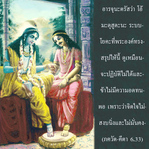
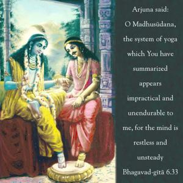
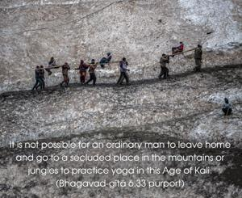
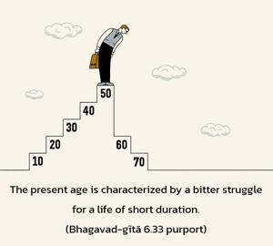
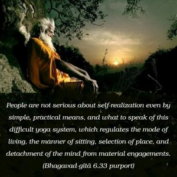

Arjuna said: O Madhusūdana, the system of yoga which You have summarized appears impractical and unendurable to me, for the mind is restless and unsteady.





The system of mysticism described by Lord Kṛṣṇa to Arjuna beginning with the words śucau deśe and ending with yogī paramaḥ is here being rejected by Arjuna out of a feeling of inability. It is not possible for an ordinary man to leave home and go to a secluded place in the mountains or jungles to practice yoga in this Age of Kali. The present age is characterized by a bitter struggle for a life of short duration. People are not serious about self-realization even by simple, practical means, and what to speak of this difficult yoga system, which regulates the mode of living, the manner of sitting, selection of place, and detachment of the mind from material engagements. As a practical man, Arjuna thought it was impossible to follow this system of yoga, even though he was favorably endowed in many ways. He belonged to the royal family and was highly elevated in terms of numerous qualities; he was a great warrior, he had great longevity, and, above all, he was the most intimate friend of Lord Kṛṣṇa, the Supreme Personality of Godhead. Five thousand years ago, Arjuna had much better facilities than we do now, yet he refused to accept this system of yoga. In fact, we do not find any record in history of his practicing it at any time. Therefore this system must be considered generally impossible in this Age of Kali. Of course it may be possible for some very few, rare men, but for the people in general it is an impossible proposal. If this were so five thousand years ago, then what of the present day? Those who are imitating this yoga system in different so-called schools and societies, although complacent, are certainly wasting their time. They are completely in ignorance of the desired goal.